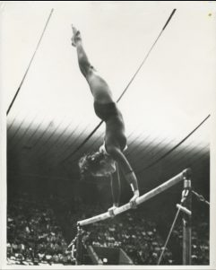

Nancy Thies (USA)
1972 US Olympian 
Nancy was born on June 10, 1957 and began gymnastics around the age of 8. She was coached by Dick Mulvihill, first in Champaign, IL, and then in Eugene, OR. While still attending the University of Illinois (where she
competed on the gymnastics team for two years), Nancy worked as a commentator for NBC Sports. She was involved with USA Gymnastics for over a decade and was instrumental in developing its
Athlete Wellness Program. In the early 2000s, Nancy and her family moved to Oregon. She is currently the Associate Vice President of People and Culture at Corban University.
Competition Results
1971
USGF Championships: 7th AA
1972
AAU Championships: 1st Team, 3rd AA
Midwest Open: 1st AA (junior division)
Olympic Games: 4th Team
US Olympic Trials: 5th AA
USA-JPN Dual Meet: 1st Team, 10th AA
1973
1st Elite Qualification Meet: 2nd AA
AAU Championships: 4th AA, 2nd B, 3rd UB
Golden Sands International: 6th AA
Scarborough Winstonettes Invitational: 4th AA
USA-CHN Dual Meet: 1st Team, 7th AA
USA-ROM Dual Meet: 2nd Team, 4th AA
USGF Elite Championships: 3rd AA, 1st B, 2nd FX, 5th UB
1974
AAU Championships: 3rd AA, 2nd FX
Elite Qualification Meet: 5th AA
USA-CSSR Dual Meet:
2nd Team, 3rd AA
USGF Elite Championships: 6th AA, 6th V, 3rd FX
World Championships Team Trials: 9th AA
1975
1st Elite National Qualification Meet: 3rd AA
2nd Elite National Qualification Meet: 13th AA
AAU Championships: 9th AA, 2nd FX, 3rd UB
Big Ten Championships: 1st Team, 1st AA, 1st V, 1st UB, 1st B, 1st FX
USGF Elite Championships: 6th AA
1976
AIAW Championships: 2nd AA, 6th UB
1977
AIAW Regional Championships: 5th Team, 1st AA, 1st V, 1st B, 1st FX, 3rd UB
AIAW Illinois State Championships: 3rd Team, 1st AA, 1st V, 1st UB, 1st B, 1st FX
This page was created on August 13, 2020 and was last updated on February 15, 2021.
© Gymn Forum